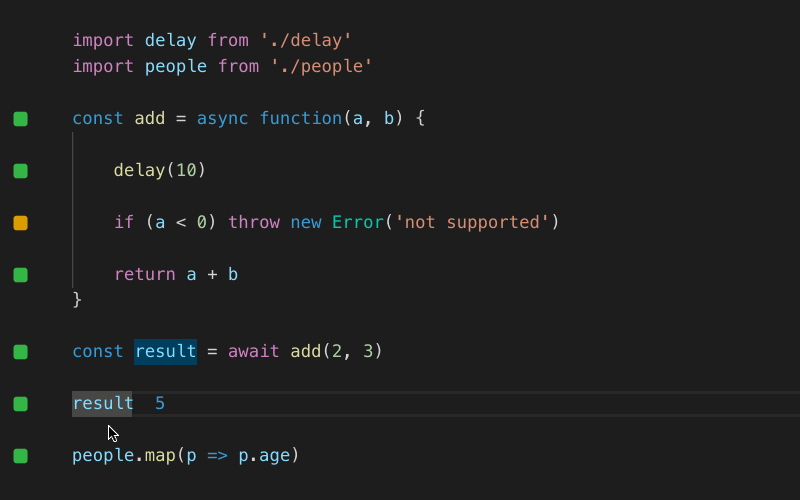

Мели ее, эту смесь из иллюзии, небыли, снов и были,
Чтоб, в клочья порвав экран, чернее сажи и черта злей
Лихой паровоз Люмьеров ворвался в зал и пошел навылет,
Разбрызгивая по стенам мусьев, мадамов и мамзелей.
Гипперавтоматизированный пайплайн
Почему матрица должна победить
Добро и зло
$ matrix has you
$ matrix has you
— А может Матрица не про добро и зло?
Люди и машины
Люди хуже потому что
Ограниченные ресурсы
1. Ограничения
- Внимание
- Память
- Мыслетопливо
2. Лень
3. Совместимость с другими
4. Ментальные ловушки
Люди лучше потому что
Творчески мыслят
Обладают эмпатией
Принимают стратегические решения
— Что делать?
— Построить свою матрицу!
Пайплайн в широком смысле слова
| От | До | |
|---|---|---|
| CI/CD | Коммита | Прода |
| Наш | IDE и раньше | ∞ |
Принципы
Время до выявления проблемы
| Где | Когда | $ |
|---|---|---|
| В IDE | Через секунды | 0 |
| CI/CD | Через минуты | 0 |
| Code Review | Один день | $ |
| QA | Через дни | $$ |
| Прод | Больно | $$$$$ |
Про радость
Почему я так радуюсь каждому кейсу про беспилотники в суде? Потому что чем быстрее человечество научится решать юридические проблемы беспилотников, тем быстрее беспилотники окажутся на наших улицах.
Примеры
Проверка типов

REPL development (quokkajs.com)
Видео
- PiterJS #20 - Николай Рыжиков - Clojure for frontenders youtu.be/6oF_fRyKsd4
- PiterJS #23 Статическая vs динамическая типизация Ч1. youtu.be/vJ-4TUKmMr8
- PiterJS #23 Статическая vs динамическая типизация Ч2. youtu.be/mTHMKWxjo8E
Wallaby
Дмитрий Махнёв — Wallaby.js & Quokka.js. Быстро. Красиво. Качественно. youtu.be/EOe7V5okn6Y
eslint


...
<ul className="tab">
<li>Login</li>
<li>SignUp</li>
</ul>
...
...
<ul className="tab">
<li>{ i18n('Login')}</li>
<li>{ i18n('SignUp')}</li>
</ul>
...
Eslint.
JSXText: (node) => {
context.report({
node,
message: 'Text "{{value}}" should be localized',
data: { value: node.value },
});
}
eslint --fix
JSXText: (node) => {
context.report({
...
fix: fixer => fixer.replaceText(node, fixI18n(value)),
...
});
}
Stylelint
- Husky - github.com/typicode/husky (Снова MIT)
- Lint-staged - github.com/okonet/lint-staged
Пример
git config --global core.autocrlf false
$ echo "* text=auto" >.gitattributes
$ git add --renormalize .
$ git status # Show files that will be normalized
$ git commit -m "Introduce end-of-line normalization"
Дано
- SSL на локальном сервере (mkcert)
- Переменные окружения
...
"postinstall": "run-script-os",
"postinstall:default": "./scripts/postinstall.sh",
"postinstall:win32": ".\\scripts\\postinstall.cmd",
...
#!/usr/bin/env bash
set -o errexit
set -o pipefail
set -o nounset
if [ -n "${CI:-}" ]; then
echo "? Applilcation is running on CI server. Cert's folder should't be created\n" && exit 0
fi
[ -d "./.certs" ] && echo "? .certs folder is already exist. Skipping ssl keys creation \n" && exit 0
if ! command -v mkcert &> /dev/null
then
echo "?? Can't find mkcert in you PATH. Pleace install it or specify your PATH variable \n"
echo "?? Visit to get more info https://github.com/FiloSottile/mkcert \n\n"
echo "opening..."
open "https://github.com/FiloSottile/mkcert"
exit 1
fi
# install mkcert, requires root password to install root cert
mkcert --install
mkdir ./.certs
cd .certs && mkcert -key-file key.pem -cert-file cert.pem "*.test" localhost
[ -f "./.env.development" ] && echo "? File .env.development llready exist.
Skipping" && exit 0
echo "? Copy file template.env.development to .env.developmen"
cp ../template.env.development ../.env.development
### Intellij ###
/.idea/*
!/.idea/file.template.settings.xml
!/.idea/fileTemplates/
!/.idea/runConfigurations/
.idea/file.template.settings.xml
<?xml version="1.0" encoding="UTF-8"?>
<project version="4">
<component name="ExportableFileTemplateSettings">
<default_templates>
<template name="Component.tsx" file-name="${NAME}/${NAME}.tsx" reformat="true" live-template-enabled="true">
<template name="Component.tsx.child.0.tsx" file-name="${NAME}/__tests__}/${NAME}.test" reformat="true" live-template-enabled="true" />
<template name="Component.tsx.child.1.scss" file-name="${NAME}/${NAME}.module" reformat="true" live-template-enabled="true" />
</template>
<template name="Component.tsx.child.0.tsx" file-name="${NAME}/__tests__}/${NAME}.test" reformat="true" live-template-enabled="true" />
<template name="Component.tsx.child.1.scss" file-name="${NAME}/${NAME}.module" reformat="true" live-template-enabled="true" />
</default_templates>
</component>
</project>
### vscode ###
.vscode/*
!.vscode/settings.json
!.vscode/tasks.json
!.vscode/launch.json
!.vscode/extensions.json
*.code-workspace
Код
const getTasks = async (): CompletionItem => {
await (api.getTasks()).map((item) => {
return {
label: `${item?.fields?.summary?.substring(0, 60)} [${item.key}]`,
insertText: `feat: close ${item.key} (${item?.fields?.summary})`,
};
});
};
const connection = createConnection(ProposedFeatures.all);
connection.onInitialized(() => {
connection.client.register(DidChangeTextDocumentNotification.type);
});
connection.onInitialize(() => {
return {
capabilities: {
completionProvider: {
resolveProvider: true,
},
},
};
});
connection.onCompletion(async () => {
return await getTasks();
});
connection.listen();
Больше линтеров
- HTML github.com/htmlhint/HTMLHint
- Правописание github.com/koalaman/shellcheck
- Структура JS проекта (Лизензии, тесты) github.com/SamVerschueren/clinton
- Env files github.com/dotenv-linter/dotenv-linter
- Markdowngithub.com/DavidAnson/markdownlint
Проверка на копипасту
Боты
src/setupProxy
const { createProxyMiddleware } = require('http-proxy-middleware');
const variables = JSON.stringify(process.env);
module.exports = function init(app) {
app.use('/api/login', (_req, res, next) => {
res.cookie('JSESSIONID', '1', { httpOnly: true });
res.send('{}');
next();
});
app.use(
'/api',
createProxyMiddleware({
target: 'http://localhost:4010',
changeOrigin: true,
pathRewrite: { '^/api': '' },
})
);
};
Автогенерация e2e тестов
Убираем фича флаги
npm.io/package/@cozy/codemods
import Old from 'old'
import New from 'new'
flag("My super feature") ? <Old /> : <New />
import New from 'new'
<New />
Матрица Манштейна
| Глупые | Умные | |
|---|---|---|
| Ленивые | Не трогать | Звезды |
| Трудолюбивые | Уволить немедленно |
Отличные управляющие |
Спасибо
twitter: @zolotyh
telegram: @aazolotyh
github: @zolotyh